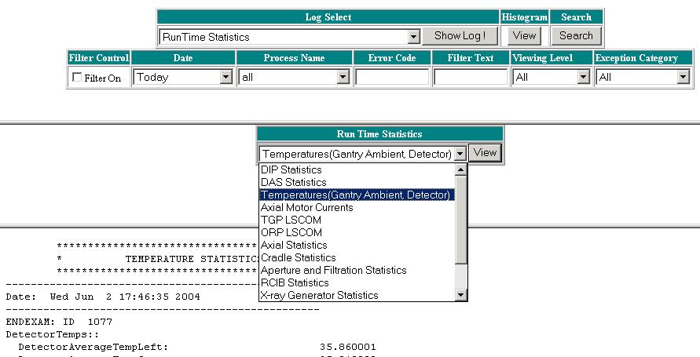

Operating Documentation
Direction 5181178-800, Rev# 16
BrightSpeed Select Service Methods Gen
Module Version 1.0, Version Date 2/16/07
Operating Documentation |
The Real Time Statistics data supplied on the system is generally sent to the console at End Exam. The data may be taken during the exam but the data is not transferred until an End Exam action is performed.
This data gives information regarding many areas of the Gantry. RTS data is available in the following areas. Each of these areas is a hyperlink to more detailed information in each area.
Instructions for Use of the Log Viewer are after the following list of logs.
Access to the RTS data on the system is done through the Common Service Desktop (CSD). See Illustration 1 for a sample Real Time Statistics screen.
Select the [Error Logs] tab from the CSD home page.
Select the [System Browser] menu option.
Select [Run Time Statistics] from the Log Select pulldown menu and select [Show Log!] to view the list of available RTS data logs.
Select the desired log from the pulldown menu and use the [View] button to show the log in the window at the bottom of the log viewer screen.
Illustration 1: Real Time Stats log viewer
